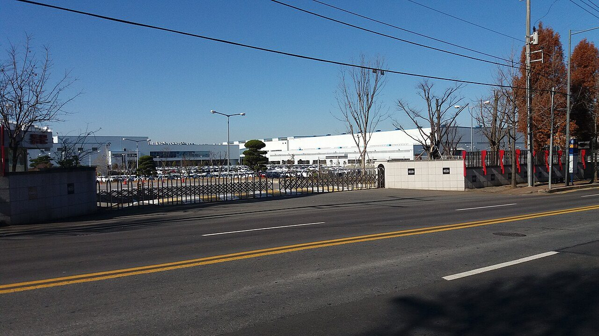
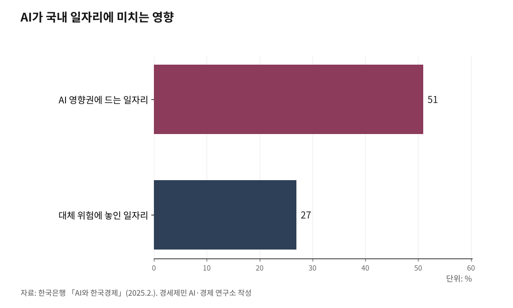

UN AI 허브, 인천 제조업 25만에 '국제 노동기준' 연다
UN AI 허브 오면 ILO 정의로운 전환 기준이 인천에 닿는다
독일 루르, 60년 단계 전환으로 대량실업 막아
영세사업장·비정규직·외국인 노동자 보호 설계가 과제
UN 글로벌 AI 허브가 인천에 오면 제조업 노동자 25만 명에게도 영향이 미친다. 노동을 다루는 국제기구가 인천에서 함께 활동하게 되기 때문이다. UN AI 허브가 인천 제조업에 여는 길을 짚는다.

1. UN AI 허브가 인천 노동자에게 여는 것
UN 글로벌 AI 허브에는 국제노동기구(ILO)가 참여한다. 노동을 다루는 유엔 전문기구다. ILO가 인천에서 활동하면, AI 전환기 노동자 보호의 국제 기준이 인천 현장에 닿는다. 채용과 평가에 쓰는 알고리즘에 대한 노동자 권리, 일자리를 옮기는 재교육이 그 대상이다.
AI는 인천 제조업 현장에도 들어오고 있다. 불량을 잡는 영상 검사, 설비를 돌리는 자동화가 그 예다. 도입이 빠를수록 노동자를 지키는 기준도 함께 가야 한다. 기준이 없으면 일자리는 줄고 보호는 빠질 수 있다.
송도가 국제기구를 품은 도시라는 점이 여기서 힘을 낸다. 기준을 만드는 기구가 도시 안에 있으면, 그 기준을 현장에 옮기기도 빠르다.

2. ILO 정의로운 전환, 노동자 보호 국제기준
ILO는 2015년 11월 '정의로운 전환 가이드라인'을 채택했다. 회원국 정부와 노동자·사용자 대표가 함께 합의한 국제 기준이다. 가이드라인은 거시경제·산업정책, 기능 개발, 사회보호, 노동자 권리, 사회적 대화 등 아홉 개 정책 영역을 담았다. 전환 비용을 노동자에게만 지우지 않고, 일자리를 줄이는 전환이 아니라 새 일자리로 옮겨 타는 전환을 하자는 원칙이다.
ILO는 2025년 폴란드 국립연구소(NASK)와 함께 생성형 AI가 일자리에 미치는 영향을 분석했다. 실무자와 전문가 평가로 직업별 과업을 따졌다. 세계 노동자 25%가 생성형 AI에 노출되고, 3.3%가 가장 높은 자동화 위험에 놓인다고 봤다. 노출은 직군마다 달라, 사무·행정 직군과 여성 일자리가 특히 크고 제조 현장도 자동화가 빠른 공정부터 영향을 받는다.
3. 루르의 전환, 대량실업 막은 60년
독일 루르 지역은 정의로운 전환 본보기로 꼽힌다. 한때 유럽 최대 공업지대였다. 1950년대 석탄 위기가 시작된 뒤, 독일은 60년에 걸쳐 탄광을 단계적으로 닫았고 2018년 마지막 탄광이 문을 닫았다.
그동안 재교육과 새 산업 유치를 함께 진행해 대량실업을 피했다. 보훔 루르대학교를 비롯한 대학과 연구소도 들어섰다. 빠른 자동화가 아니라 시간을 둔 전환이 일자리를 지킨 것이다. 한 세대에 걸친 준비가 충격을 흡수했고, AI 전환도 같은 길을 갈 수 있다.
4. 한국도 제도를 갖췄다
한국도 법을 마련했다. '산업전환에 따른 고용안정 지원 등에 관한 법률'(산업전환고용안정법)이 2024년 4월 25일 시행됐다. 직업능력개발훈련, 고용유지, 전직·재취업 지원을 담았고, 산업·일자리전환 지원센터가 전환 업종 노동자의 재취업과 훈련을 돕는다.
2026년 1월 22일에는 'AI기본법'이 시행됐다. 영향이 큰 AI는 영향평가를 하도록 했고, 노동자에게 큰 영향을 주는 AI도 그 대상이 될 수 있다.
법은 갖췄다. 국제 기준에 맞춰 인천 현장에서 어떻게 운영할지가 남았다. ILO가 송도에 있으면 그 운영을 국제 기준에 맞추기 쉬워진다.
5. 남은 과제, 25만 명에게 닿는 길
인천 제조업 전환 부담은 작지 않다. 국가데이터처 전국사업체조사를 보면 인천 제조업 노동자는 25만 명 안팎이다. 한국은행은 2025년 2월 'AI와 한국경제'에서 국내 일자리 51%가 AI 영향권에 들고 27%가 대체 위험에 놓인다고 분석했는데, 인천 제조업이 그 앞단에 있다.
보호가 가장 약한 자리도 있다. 인천 제조업은 영세사업장 비중이 높고, 비정규직 비율은 2025년 38.5%다. 외국인 노동자는 2024년 5월 5만8000명으로 1년 새 14.9% 늘었다. 영세사업장과 비정규직과 외국인 노동자는 AI 전환에서 보호장치가 가장 약하다.
AI를 도입하려면 장비와 전문 인력이 든다. 영세사업장이 혼자 감당하기는 어려워, 공공이 재교육과 도입 비용을 함께 떠받치는 설계가 필요하다.
UN AI 허브가 일자리를 보장하지는 않는다. 다만 노동자 보호 국제 기준이 인천 안에서 작동하고, 영세사업장과 비정규직과 외국인 노동자가 그 보호 안으로 들어올 길이 열린다. 그 설계가 유치가 남길 과제다.
참고문헌
· 「Guidelines for a just transition towards environmentally sustainable economies and societies for all」, ILO, 2015.11., https://www.ilo.org
· 「Generative AI and Jobs: A Refined Global Index of Occupational Exposure」, ILO·NASK, 2025., https://www.ilo.org
· 「BOK 이슈노트 제2025-2호: AI와 한국경제」, 한국은행, 2025.2.10., https://www.bok.or.kr
· 「2023년 전국사업체조사 결과(잠정)」, 국가데이터처, 2024., https://kostat.go.kr
· 「e-지방지표 비정규직 비율」, 국가데이터처, 2025., https://kosis.kr
· 「2024년 이민자체류실태 및 고용조사 결과」, 통계청, 2024.12., https://kostat.go.kr
· 「산업전환에 따른 고용안정 지원 등에 관한 법률」, 국가법령정보센터, 2024.4.25. 시행, https://www.law.go.kr
· 「인공지능 발전과 신뢰 기반 조성 등에 관한 기본법」, 국가법령정보센터, 2026.1.22. 시행, https://www.law.go.kr
※ 이 칼럼은 AI 프로그램 클로드를 활용해 작성했습니다.
사진 출처
· [대표사진] Neoalpha, "Gwangju KIA Factory.jpg", 위키미디어 공용, CC0, https://commons.wikimedia.org/wiki/File:Gwangju_KIA_Factory.jpg
※ 이 기사는 인공지능을 활용해 작성했습니다.
관련기사
- 국제기구 도시 송도, UN AI 허브 최적지… 박찬대 앞장서
- 박찬대가 건 송도 UN AI 허브, GCF 12년이 받친다
- 짓는 도시 아닌 운영하는 도시… 인천의 UN AI 허브 승부수
- UN AI 허브는 거대 데이터센터 아닌 'AI규범 UN기구'… 국제기구 클러스터 인천이 최적지
저작권자 © AI경세제민 무단전재 및 재배포, AI학습 및 활용 금지